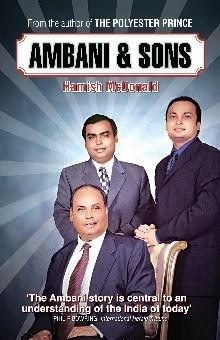

Library › History
Ambani & Sons — Summary & Key Lessons

From a petrol-pump clerk's son to India's first trillion-rupee company: the rise, the empire and the brothers' war over the Reliance inheritance.
📖 OPEN THE FULL INTERACTIVE BREAKDOWN →🌐 Read it in Hindi, Hinglish, Gujarati, Tamil & 22 more languages — free, with audio.
💡 The Big Idea
McDonald traces Dhirubhai Ambani's arc from Aden petrol pump clerk to India's most powerful industrialist: his genius was seeing that in a capital-starved, permission-ruled economy, the real resources were public savings and political goodwill. Reliance democratized equity (millions of small shareholders became a political shield), integrated backwards relentlessly (textiles to polyester to petrochemicals to refining), and treated Delhi as a market like any other. The book then dissects the 2005 family settlement between Mukesh and Anil: Mukesh inherited cash-generating, capital-intensive businesses he could fund internally; Anil got services businesses (telecom, power, finance) that needed constant external capital and regulatory goodwill. That difference in business models, more than personalities, explains why one empire compounded and the other collapsed.
🧠 The 7 Key Lessons
Lesson 1: Sell the Dream to Millions of Small Owners
The Equity Cult
In 1977, when Delhi tried to curb Reliance's expansion, the epochal public issue of Reliance shares had already created an army of lakhs of retail shareholders who saw the company as their own wealth machine. Dhirubhai turned shareholders into a political constituency: attacking Reliance meant attacking ordinary families' savings. The lesson: a broad, loyal, retail-aligned ownership base is both capital and armor, in politics and in markets.
📖 Example: Reliance's 1977 issue drew over 58,000 first-time investors; by the 1980s the shareholder base crossed a million, and politicians weighing anti-Reliance moves faced rallies of angry small investors at their doors. Read the full example →
⚡ Do this: Design your capital base to include your customers and community where possible. Owners defend; lenders and miners extract.
Lesson 2: Integrate Backwards Until You Own the Inputs
The Value Ladder
Reliance's strategy was a staircase: sell fabrics, then make the polyester, then the PTA and paraxylene feeding it, then the refining and ports feeding those. Each step captured the margin of the previous supplier and made the whole chain harder to attack. Vertical integration in input-hungry industries converts market risk into operating leverage, an edge when volumes grow and a killer when they shrink.
📖 Example: Jamnagar's refinery, the world's largest at commissioning, let Reliance make its own raw materials at global scale, so polyester-price wars that bled competitors became absorbing exercises for the family that owned the entire chain. Read the full example →
⚡ Do this: Map the three most expensive inputs you buy. For each, price what owning or locking its supply would cost versus the volatility you suffer annually.
Lesson 3: Treat Regulators and Politicians as a Market
The Delhi Desk
In the license raj, Reliance out-organized rivals in Delhi: anticipatory lobbying, sympathetic coverage, research that supported its cases (the Indian Express war of the late 1980s showed the fury this invited, with tax raids and counter-press battles). The uncomfortable lesson: in heavily regulated markets, the policy game is as decisive as the product game, and the companies that pretend otherwise lose to those that do both.
📖 Example: Polyester-fiber licensing disputes in the 1980s were decided not on factory floors but in committee rooms, where Reliance's prepared briefs and aligned voices outnumbered the public-sector incumbents' assumptions. Read the full example →
⚡ Do this: In any regulated business, budget real time and talent for policy engagement. The rules are a product feature; ship your version of them deliberately.
Lesson 4: The Split: Divide Assets, Not Philosophy
Kokilaben's Table
After Dhirubhai died in 2002 without a will, the brothers' conflict froze strategy until their mother brokered the 2005 division: Mukesh took oil, gas, refining and petrochemicals; Anil took telecom, power, financial services and media. The settlement looked balanced on asset value but hid a fatal asymmetry: one half self-funded from commodity cash flows, the other needed continuous capital-markets and regulator goodwill to survive.
📖 Example: Mukesh's refining and petchem businesses threw off cash every quarter that could fund the next project; Anil's telecom needed spectrum, debt and policy support every year, so every policy wobble became a solvency event for the whole group. Read the full example →
⚡ Do this: If you split or spin off anything, split by cash-flow character, not by asset value. Ask of each piece: can this business fund its own next bet?
Lesson 5: Capital-Hungry Businesses Live on Confidence
Anil's Half
ADAG's telecom, power and infrastructure ventures were engineered for a world of permanent cheap money and rising policy support: heavy debt, staged projects, aggressive timelines. When 2008's credit crunch, spectrum controversies and RCom's price war arrived together, the model inverted: leverage that magnified growth magnified decline. Anil's fall (RCom's 2017 insolvency, the 2020 personal guarantee episode) is India's clearest case study in capital-structure risk.
📖 Example: RCom, once India's second-largest mobile operator, sold its crown-jewel assets to Jio's disruption and debt pressure, and entered insolvency owing over Rs 46,000 crore, while brother Mukesh's Reliance (with its own cash engine) launched Jio and took the market instead. Read the full example →
⚡ Do this: Compute how many quarters your business survives if external funding stops completely. If the answer is under four, your strategy is borrowed, not owned.
Lesson 6: Mukesh's Half: Compound in Cash Rivers
Jio and the Long Game
Mukesh concentrated on businesses with pricing power, scale economics and cash generation, then used that river to enter telecom with Jio: years of losses funded internally until rivals bled out. The pattern: a cash-rich core lets you make decade-long bets competitors cannot match; a cash-hungry core makes even winners fragile. Empire durability follows cash-flow character, not asset lists.
📖 Example: Jio launched in 2016 with free voice and cheap data, spending tens of billions it could internally sustain; incumbent operators with debt-funded networks cut staff, merged or folded within three years. Read the full example →
⚡ Do this: Identify the cash-river core of your business and defend it fiercely before funding new adventures from it. Fund expansion from rivers, never from hope.
Lesson 7: Succession: The Founder Who Plans Too Late
No Will, Three Cards
Dhirubhai died intestate with two capable, competitive sons and a group too big for informal splitting; six years of public conflict followed, eroding value and dignity. Contrast Japan's multi-generation grooming or professional-CEO transitions: the cheapest time to design succession is before it is needed. Family firms that treat succession as strategy outlive those that treat it as taboo.
📖 Example: The 2005 settlement's terms (non-compete arrangements later relaxed in 2010) were negotiated through the mother because no governance structure existed; analysts estimate years of deadlock cost both groups strategic momentum at the exact moment telecom and retail were being decided. Read the full example →
⚡ Do this: Write your succession memo this quarter, even if you are 30: who owns what, who decides what, and how disputes are arbitrated. Update it like a product.
✅ 5-Step Action Plan
- Build an ownership base that includes customers and community; owners defend.
- Price backward integration for your three costliest inputs before the next price war.
- Budget for policy engagement as a product feature in regulated markets.
- Stress-test survival if external funding stops for four quarters; fix the answer if it is small.
- Write and date your succession memo now; treat it as a living document, not a taboo.
⚠️ When This Doesn't Work
McDonald wrote with unusual access but also courted litigation: earlier editions (The Polyester Prince) were banned in India, and this edition is necessarily more careful about names and claims; several episodes rest on reporting rather than court records. Post-2010 events (Jio's launch, RCom's insolvency, Anil's court battles) are outside the book; we use them only to complete the arc the book sets up. Read it as business history with a journalist's lens, not an audited corporate record.
💀 The Graveyard Proves It
📵 Reliance Communications — Anil Ambani's ₹45,000 Crore Phone Empire — Gone in a Decade. Burn: ₹45,000+ crore debt → bankruptcy; stock from ₹1,000+ to under ₹1. Read the full case study →
💬 Best Quotes from Ambani & Sons
- “Dhirubhai sold shares the way other men sold fabric: to the millions, and with a promise of being someone.”
- “In a shortage economy, the scarce resource is not capital or licenses. It is goodwill in the right corridors.”
- “The settlement split the family, but it also split the business models, and only one of them could live on its own cash.”
- “Growth financed by other people's patience ends when their patience does.”
Interactive version: mark lessons as read, listen in your language, share quote cards.